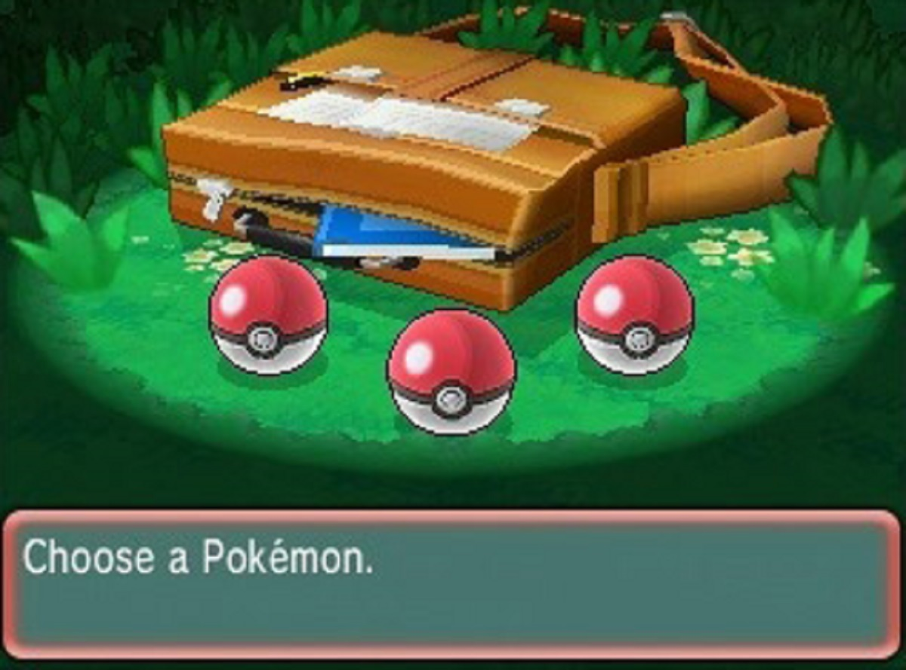
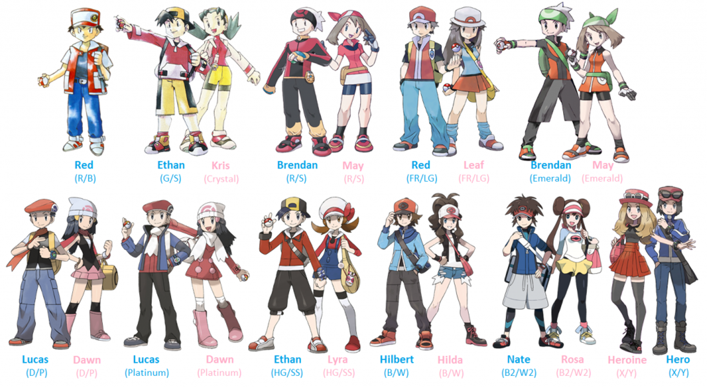

History
The history of the Pokémon media franchise spans over two decades from when work began officially on the first game to now, and has roots even older. It started simply enough as a hobby of Satoshi Tajiri, who as a child had a fondness for catching insects and tadpoles near his home in suburban Tokyo. Over time, Tajiri decided to put his idea of catching creatures into practice, to give children the same thrills he had as a child.
With the help of Ken Sugimori and other friends, Tajiri formed Game Freak and much later the design studio known as Creatures. When Tajiri discovered the Game Boy and the Game Boy Game Link Cable, it gave him the image of insects traveling along the wire. Tajiri was also heavily influenced by the Ultraman fantasy television show, Ultra Seven, in which the protagonist used giant monsters contained within small capsules to help him fight. Together, these two sources gave him the idea for a new game called Capsule Monsters. After several failed attempts at pitching this idea to Nintendo, Tajiri's new friend Shigeru Miyamoto pitched it to the company, and Nintendo began to fund the project, spending six years developing the games that would become a worldwide sensation. Due to trademarking issues, the name "Capsule Monsters" was changed to "Pocket Monsters".
gameplay
The gameplay of the Pokémon video game series involves the catching and training of a variety of fictional creatures called "Pokémon" and using them to battle other Trainers. Each successive generation of games builds upon this concept by introducing new Pokémon, items, and gameplay concepts. Some of the general concepts were featured elsewhere in the franchise before being introduced to the games; double battles appeared in the anime long before appearing in the games, and Pokémon Abilities are similar to the Pokémon Powers introduced in the Pokémon Trading Card Game, which also introduced Shiny Pokémon, different colors of that type of the original Pokémon.

Player
The player characters of the core series games In the core series games, the player characters are Pokémon Trainers beginning their Pokémon journey. They start their journey in their hometown by getting a starter Pokémon, a Pokémon that appears very early in their native region's Pokédex, and is usually of the Grass-, Fire-, or Water-type. The region's resident Pokémon Professor will always give them this, as well as a Pokédex. Starting in Pokémon Crystal, players can also choose their character's gender. Usually, they have rivals who begin their journey at about the same time. Players take part in several events, and meet a great number of Pokémon and people during their adventure. A common target is to conquer a Pokémon League's eight Gym Leaders and Elite Four, and become the Champion. Several additional side-quests occur during and after each game's main plot. To date, only one player character has reappeared from an older generation in a role other than that of the player. In Generation II and the Generation IV remakes, when Ethan or Kris/Lyra travels to Mt. Silver and reaches the deepest point of the cave, Red is found, utterly silent as he was under the player's control. At the time of these games' respective releases, Red's Pikachu was the highest-leveled Pokémon owned by an in-game Trainer (Barry's fully evolved starter Pokémon temporarily surpassed the standard set in Gold and Silver until the release of their remakes, HeartGold and SoulSilver). Red reappeared in Black 2 and White 2, in the Champions Tournament of the Pokémon World Tournament, and again in the Alola-based Generation VII games, as the leader of the Battle Tree with Blue. The player character can be named in all core series games at the beginning of the game using the same interface as that for entering nicknames for Pokémon.

Starters
At the beginning of their quest, Trainers are given a starter Pokémon. This Pokémon will be used to battle the first wild Pokémon that the Trainer encounters.

Authors Favorite Pokemon
Arcanine is a quadruped, canine Pokémon with an orange pelt marked by jagged black stripes. It has diamond-shaped ears with beige insides, black eyes, a round, black nose, and two pointed teeth protruding from its upper jaw. Its head, muzzle, and chest are covered in shaggy, beige fur, except for two oval sections around each eye and ear. Long tufts of fur grow behind its knees and around its ankles. Its underside is black, and it has a billowing, beige tail that is bent in the middle. Each paw has three toes and a round, pink pad.
Arcanine is a fiercely brave and loyal Pokémon. It is capable of running 6,200 miles (10,000 kilometers) in 24 hours with a speed and grace reminiscent of flight. Additionally, the move Extreme Speed was its signature move in the past. Arcanine has long been admired for its beauty and speed, and anyone who hears its bark will grovel before it. The source of its power is a flame blazing wildly inside its body. In the anime, it was shown that it stashes food in its mane and carries it to its nest for its young. Arcanine lives on prairies, and Pokémon Snap has also shown it living in active volcanoes.